LSTM可以用在上下文理解中。
原文地址http://blog.csdn.net/jerr__y/article/details/58598296 @翻译：huangyongye
原文链接： Understanding LSTM Networks
前言：其实之前就已经用过 LSTM 了，是在深度学习框架 keras 上直接用的，但是到现在对LSTM详细的网络结构还是不了解，心里牵挂着难受呀！今天看了 tensorflow 文档上面推荐的这篇博文，看完这后，焕然大悟，对
LSTM可以用在上下文理解中。
原文地址http://blog.csdn.net/jerr__y/article/details/58598296 @翻译：huangyongye
原文链接： Understanding LSTM Networks
前言：其实之前就已经用过 LSTM 了，是在深度学习框架 keras 上直接用的，但是到现在对LSTM详细的网络结构还是不了解，心里牵挂着难受呀！今天看了 tensorflow 文档上面推荐的这篇博文，看完这后，焕然大悟，对
聊天机器人方面 http://forum.yige.ai/thread/85
1.1 多轮对话，对话管理
1.2 上下文理解
1.3 聊天记录存储，分析
2.1 知识图谱
2.2 机器学习，深度学习相关算法和应用
3.1 谷歌提供的服务：
最近接触聊天机器人chatbot有段时间了，今天把各种渠道已有的关于chatbot的认识梳理了一下，加深理解，便于后面动手实践。
聊天机器人，是一种通过自然语言模拟人类进行对话的程序。通常运行在特定的软件平台上，如PC平台或者移动终端设备平台，而类人的硬件机械体则不是必需的承载设备。
https://mp.weixin.qq.com/s?__biz=MzIxMjAzNDY5Mg==&mid=401067430&idx=1&sn=76f859a0c05b00b12c47f5c6c8f5c590
提到机器人不得不提图灵测试，内容如下：
如果一个人（代号C）
大学的数学忘的差不多了，今天跟着大师又复习了一下，课程地址
https://www.coursera.org/learn/machine-learning/lecture/38jIT/matrices-and-vectors
简单笔记如下：
矩阵 matrix m行n列 大写字母
向量 vectors m行*1列矩阵 小写字母
加减
标量 乘除
矩阵 乘除
矩阵 * 向量
m * n X
在此感谢yjango大神，在学习神经网络的路上有大神深入浅出的指引使自己少走了很多弯路，以下是此书地址： https://yjango.gitbooks.io/superorganism/content/
该书最终的目的是：通过理解智能，学习如何学习。
如何机器学习
如何大脑学习
以下是学习过程中感觉重要的笔记，在此记录下来，如有侵权，请随时联系我删除。
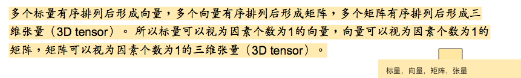
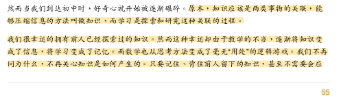
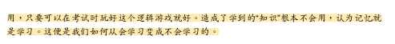
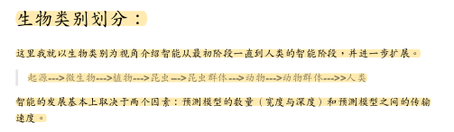
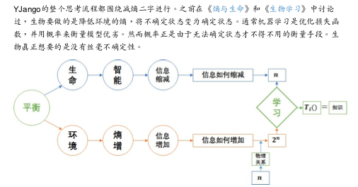
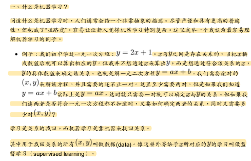
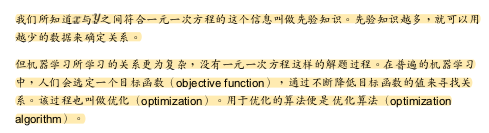
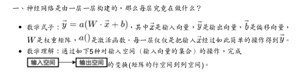
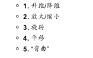
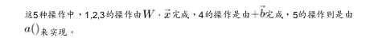
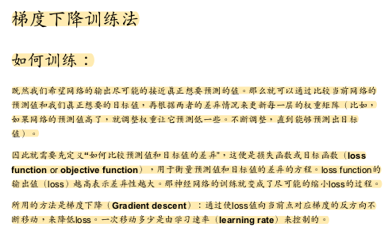
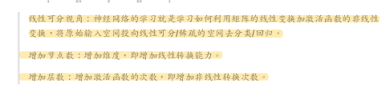
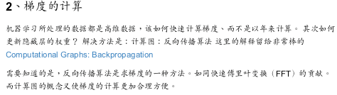
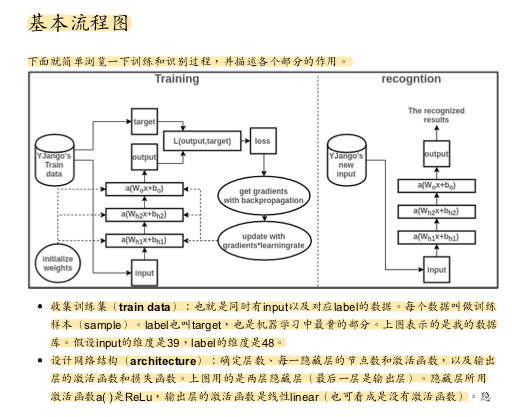
 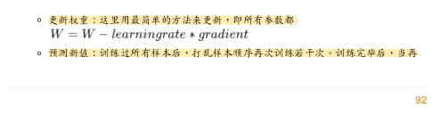
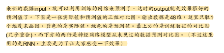
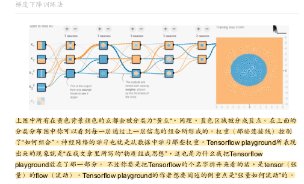
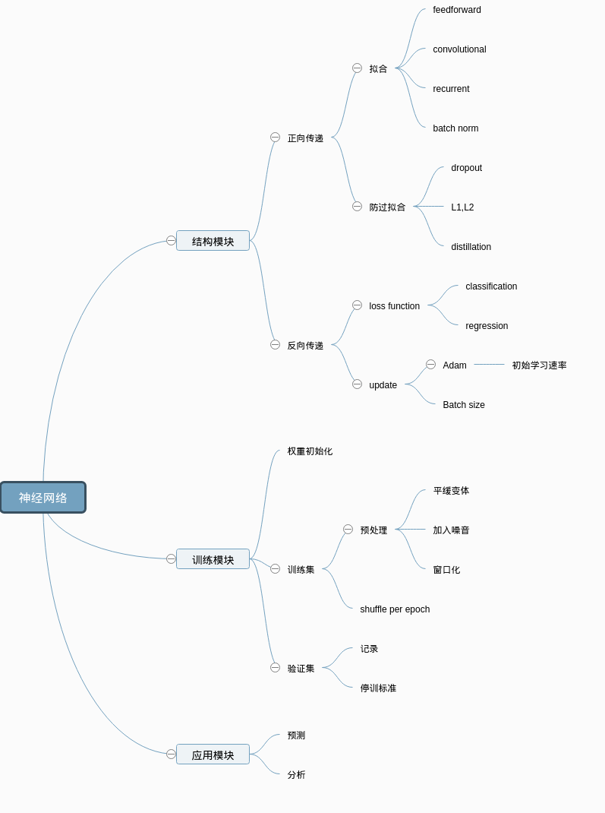
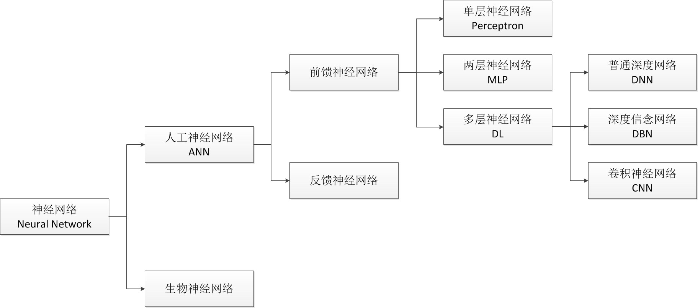
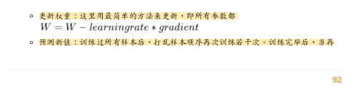
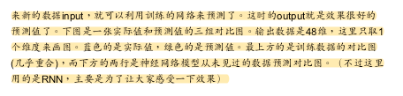
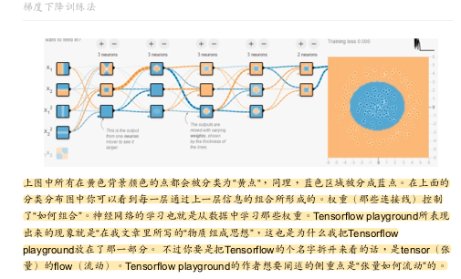
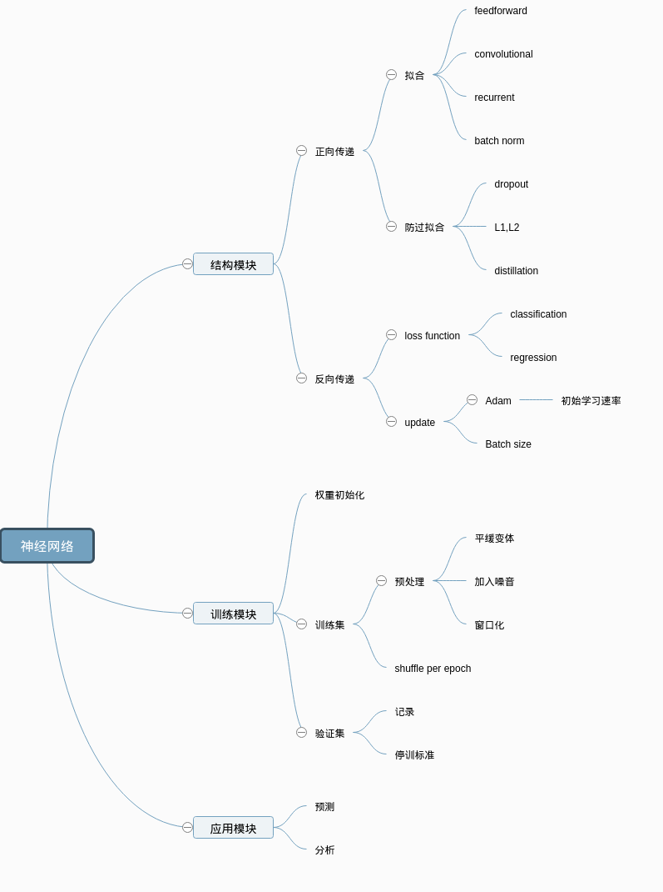
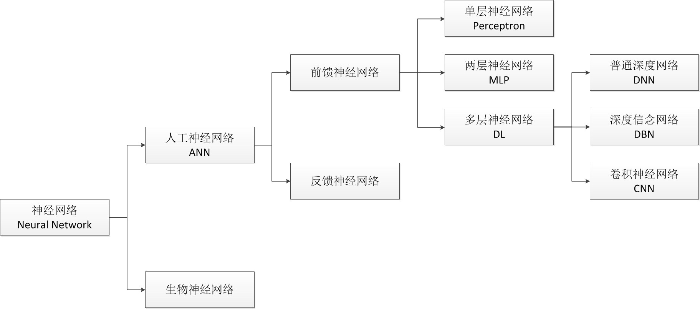
今天学python，遇到了协程，这个之前写java没怎么用过，今天查了下记录下来，反复理解。
协程其实就是函数调用,相比线程更为轻量级，代码示例如下：
def 协程1():
pass
def 协程2():
pass
def 协程3():
pass
def 协程n():
pass
while 1:
协程1()
协程2()
协程3()
协程n()
协程就是一个个函数，然后死循环调用，以上就是协程的基本思想。没什么神秘的~需要配合异步IO使用，避免阻塞~首先祝大家中秋快乐，博客公众号开了以后，访问统计看了下pv，uv少的可怜，主要原因还是内容太少，渠道也只有朋友圈传播，这次起个牛点的标题，说不定可以通过搜索增加流量，最近接触聊天机器人比较多，一直在想怎么做，能做到什么程度，能解决哪些问题，刚好国庆放假在滨江龙湖天街的奇客巴士体验了一下国内几款智能机器人的硬件产品，比较失望，于是又找了一下各大巨头的软件产品，对比了一下，记录在这里，从这里可以看到从移动互联网时代向人工智能时代巨头们的发展状况，也基本可以知道自己能做到什么地步了，最后一个感慨就是跟着google走有肉吃，google在今年5月的I/O大会宣布了从Mobile-first向AI-first的战略，自己作为个人刚好也从15年转到了backend，今年也逐渐从backend向data,ai方向进军，希望今年能做出点拿的出手的东西来，后面也会不断增加这方面的文章，废话不多说了，以下是正文：
鉴于开通了公众号，博客可能会有越来越多人来访问，今天下午给博客升级了一下功能，主要增加了访问统计和评论留言功能，简单记录如下：
由于读者大部分应该还是国内用户，就使用了百度统计，接入非常简单方便，功能看着还算强大，后面考虑可以做下seo搜索优化，目前google搜博客地址可以搜到，baidu还是乱七八糟的结果，bing搜出来的是个俄罗斯网站(http://go2mars.ru/) ，内容是关于火星探索的，挺丰富的，没想到自己yy的这个域名还是可以的，老毛子也起了一样的域名前缀，不过人家研究的更早更专业，看了下域名注册时间居然是2006年的。
具体增加方法参考官方文档即可： https://tongji.baidu.com/web/help/articleList?
一到放假醒的格外早的“恶习”还是一如既往，不管晚上睡的多晚，早上到点就醒，比上班都准时。最近不知怎么的感觉想法越来越多，一是受马斯克火星殖民计划的影响，二是微信知乎看的有趣的东西比较多，感觉需要把想法idea记录下来，微信公众号朋友圈，微博，知乎这些算是信息源，看到好的mark下转发下，同时自己的想法也记录下，很多东西都是一闪而过，先写下来：
1 个人公众号开通，取名musk，因为搜索了一下居然没人用，又去搜了下网站域名，结果大部分都被注册了，想要购买的花要高价买了，其实很多人早就在做域名生意了，先把好的域名抢注下来，就像在网络虚拟世界里先买了个房子一样，好的域名就是好城市好地段的房子。
2 公众号内容：科技相关，musk相关，